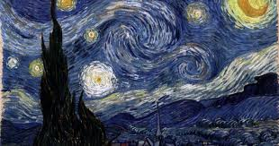

La noche estrellada (1889) refleja la vista desde su ventana en el sanatorio de Saint-Rémy.

Los girasoles (1888) representa la fascinación de Van Gogh por la luz y la naturaleza.

Terraza de café por la noche (1888) muestra su uso del color para expresar emoción.